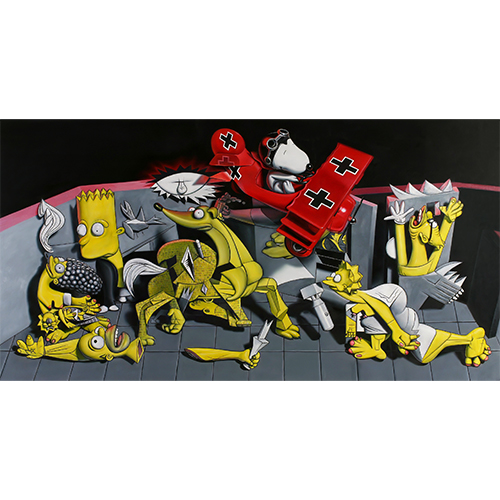

Exhibitions
Ron English: Reimagining “Guernica” / La réinvention du “Guernica” (Gernika-Lumo, Bizkaia: Museo de la Paz de Gernika, 2017), exhibition catalogue, digital flip-book, accessed April 4, 2026, https://www.museodelapaz.eus/en/3d-flip-book/ron-english-guernica-berriro-imajinatzen-reimaginando-el-guernica-eng_fr/.
Literature
Ron English, Abject Expressionism: The Art of Ron English (San Francisco: Last Gasp, 2002), p.104. ISBN 978-0867196894.
Notes
This work references Pablo Picasso’s Guernica (1937).